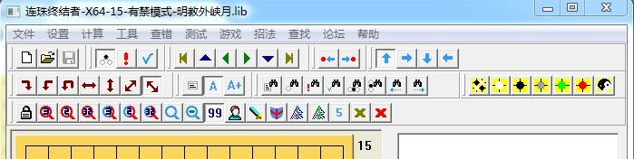

RenJuSolver 连珠终结者 帮助文档 v1.0试用
#1 RenJuSolver 连珠终结者 帮助文档 v1.0试用 作者：小丸.net 发表时间：2011-10-27 9:08:22
首先声明，该文档内容适合最新正版终结者，使用盗版、非最新版的有问题不要问我，问小4.本人只是随便做了一个帮助文档而已。点击这里下载
［此帖子已被 小丸.net 在 2011-10-27 9:14:45 编辑过］
［ aabb 于 2011-10-27 14:35:05 时花20金币送鲜花一朵］
［ 失落刀 于 2011-10-27 19:16:50 时奖励此帖[金币加 100 威望加1］
［ 飞翔 于 2011-10-29 19:57:39 时花20金币送鲜花一朵］
#2 Re:RenJuSolver 连珠终结者 帮助文档 v1.0试用 作者：五子酷 发表时间：2011-10-27 14:14:17
谢谢，丸之大哥！
#3 Re:RenJuSolver 连珠终结者 帮助文档 v1.0试用 作者：极地剑客 发表时间：2011-10-27 20:15:10
建议配合小四版说明一起用,楼主这个<菜单功能>只能围观不能点开看解释的.#4 Re:RenJuSolver 连珠终结者 帮助文档 v1.0试用 作者：失落刀 发表时间：2011-10-27 21:38:25

小4简直是个天才，太科幻的软件。
［ 极地剑客 于 2011-10-28 1:11:03 时花20金币送鲜花一朵］
#5 Re:Re:RenJuSolver 连珠终结者 帮助文档 v1.0试用 作者：黄药师 发表时间：2011-10-27 22:01:03
引用：越来越华丽
原文由 失落刀 发表于 2011-10-27 21:38:25 :小4简直是个天才，太科幻的软件。
#6 Re:Re:RenJuSolver 连珠终结者 帮助文档 v1.0试用 作者：极地剑客 发表时间：2011-10-28 1:11:44
引用：可以开发围棋终结者去了，威武
原文由 失落刀 发表于 2011-10-27 21:38:25 :小4简直是个天才，太科幻的软件。
［ 极地剑客 于 2011-10-28 1:11:03 时花20金币送鲜花一朵］